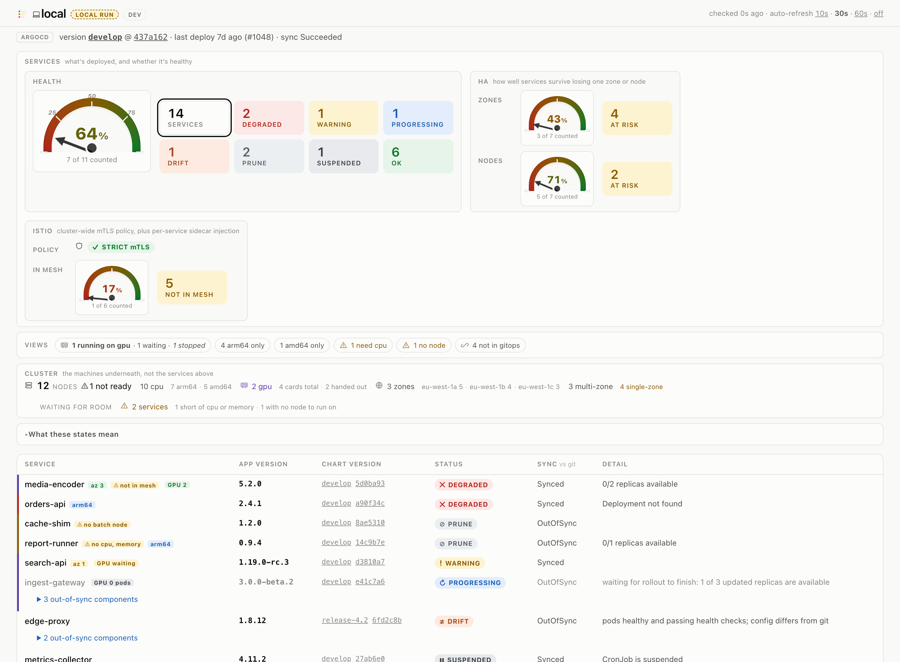
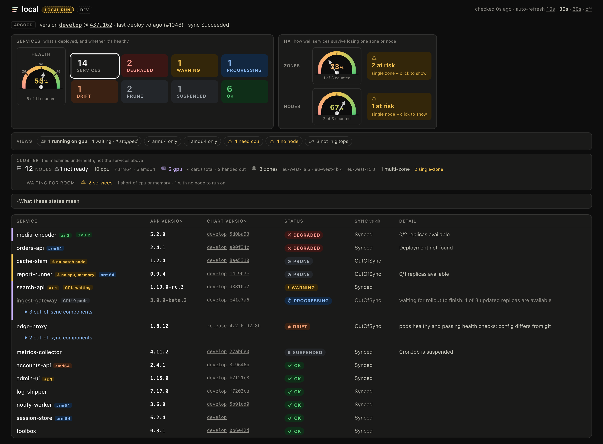

What's actually running in your cluster, and whether Git agrees.
I built this to answer one question before every production push: what version is actually running, and is this environment in a state I'd trust. One page, one binary, no JavaScript, no login of its own.
These all show you what's in a cluster. What differs is whether they can change it, whether they know what Git says should be there, and what it costs to run one.
| k8s-status | Kubernetes Dashboard | Lens / OpenLens | k9s | Headlamp | ArgoCD's own UI | Radar | |
|---|---|---|---|---|---|---|---|
| Read-only | Yes | No | No | No | No | No | No |
| Knows what Git says (GitOps-aware) | Yes | No | No | No | No | Its own apps only | Yes |
| No login of its own | Yes | No | N/A (local) | N/A (local) | No | No | Yes (local mode) |
| No JavaScript, no database | Yes | No | No | Yes (terminal) | No | No | No |
| Shared team page, not per-user | Yes | Yes | No (desktop app) | No (CLI) | Yes | Yes | Either |
None of this makes the others worse at what they do — Lens and k9s
are built for someone actively working a cluster, edits included, and the
Dashboard, Headlamp and Radar cover more of the API than a status page needs to
(Radar in particular is closest in spirit, being GitOps-aware too, but it edits
the cluster and ships a full JS frontend). k8s-status is narrower on
purpose: one read-only page, answering "is this healthy and does it match Git",
cheap enough to leave running for everyone.
Concretely: the image is under 5MB (4.9MB amd64, 4.5MB arm64, distroless), and the default install asks for 50m CPU and 64Mi memory. No sidecar, no separate database, nothing else to run alongside it.


Made-up data from the repo's own fixture. Reproduce it with
./scripts/local-test.sh fixture. No cluster required.
Every service, its app version and chart version, whether it's healthy, and whether that matches what's in Git.
How well your services survive losing one zone or one node, scored from actual pod placement, not from replica counts alone.
Cluster-wide mTLS policy and per-service sidecar injection, so you can tell "permissive somewhere" from "strict everywhere."
Whatever's running outside your GitOps controller gets its own table, instead of being silently folded into what you actually control.
Nodes, zones, GPUs, and what's waiting for room to run, read straight from the API server.
An LLM with cluster access can answer this too. That's not the same as this being free to ask.
Give an agent kubectl or an MCP server and it can tell you what's deployed. This page answers the exact same question for less: it's already computed, sitting at a URL, before anyone asks.
The answer is already rendered. Loading a page costs nothing; asking a model to run kubectl and summarize it costs a prompt, every single time.
No prompt to write, no model to wait on, no quota to run out of the one morning you actually need it, right before a production push.
Point everyone on the team at the same URL and they see the same numbers. Five people asking five agents don't reliably land on the same one.
One dedicated read-only ServiceAccount, scoped to get and
list. Not an agent holding standing credentials to your
cluster in case it's asked something later.
Two minutes, no cluster required
Try it against made-up data first, then point it at a cluster you can already read.
$ ./scripts/local-test.sh fixture